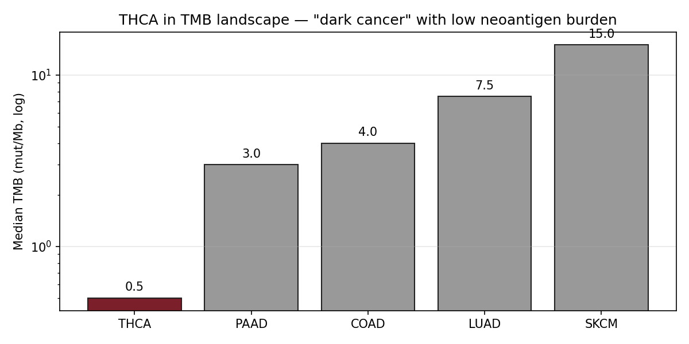
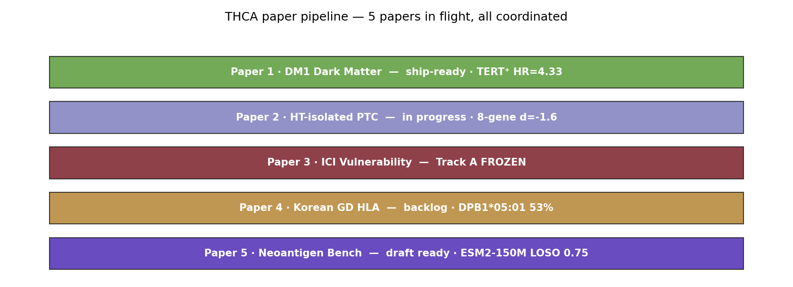
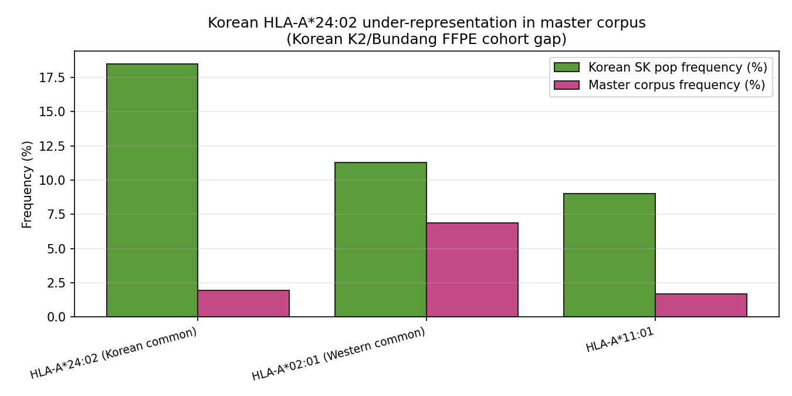

이 페이지는 원본 내용을 유지하면서, 첫 화면에 분석 데이터 정의서, 현재 claim boundary, 읽는 순서, figure/table 해설을 새로 붙인 2026-05-09 리뉴얼 버전입니다. 모든 그림은 “어떤 데이터가 들어갔는지 / 어떻게 읽는지 / 어디까지 주장 가능한지”를 같이 표시합니다.
TCGA-THCA K2 / PRJEB11591 GSE286332 GSE76039 / Landa advanced thyroid GSE184362 / GSE193581 / GSE241184 Hugo/Riaz melanoma ICI pool AFND / Korean HLA references 8-gene mini-index RAI_8 / thyroid differentiation score MAPK output score
| Term | Class | Definition | Where this page uses it |
|---|---|---|---|
| TCGA-THCA | cohort | TCGA thyroid carcinoma cohort; RNA-seq, clinical, mutation, methylation and cBioPortal-derived mutation/clinical slices depending on page. | Paper 1 DM1/DM2 derivation, survival, promoter methylation, driver strata, and several downstream reuse pages. |
| K2 / PRJEB11591 | cohort | Korean PTC RNA-seq cohort used as an external Korean replication/calibration anchor. | Korean portability, mini-index calibration, and NBNR/DM-like comparisons. |
| GSE286332 | cohort | Small Korean PTC +/- Hashimoto RNA-seq cohort used for HT-isolated signature discovery. | Paper 2 HT/HLA mechanism pages and TCGA transfer checks. |
| GSE76039 / Landa advanced thyroid | cohort | Advanced thyroid cancer expression resource used as a PDTC/ATC lineage-collapse benchmark. | Mechanism heterogeneity, advanced-disease comparisons, and reverse-causality boundary checks. |
| GSE184362 / GSE193581 / GSE241184 | cohort | Single-cell thyroid resources used for thyrocyte-intrinsic and cross-author validation checks. | Paper 1 single-cell support, figure sourcing, and cell-state caveats. |
| Hugo/Riaz melanoma ICI pool | cohort | External melanoma immunotherapy RNA/clinical resources used as ICI-response context, not thyroid predictor proof. | Paper 3 vulnerability-only evidence and claim-boundary pages. |
| AFND / Korean HLA references | reference | Allele-frequency and literature-derived HLA reference material; some rows are registry/approval-gated rather than executable analysis inputs. | Paper 2 HLA and Paper 4 GD/Pan-Asian backlog pages. |
| 8-gene mini-index | score | Curated thyroid-lineage/dedifferentiation panel used to split molecular dark-matter states; higher DM1-like score means more dedifferentiated. | Paper 1 core axis and many downstream transfer/image/vulnerability pages. |
| RAI_8 / thyroid differentiation score | score | Mean z-score over thyroid differentiation genes; direction is differentiated / RAI-avid unless explicitly negated. | Lineage preservation/collapse comparisons and treatment-rationale pages. |
| MAPK output score | score | MAPK pathway output or driver-class proxy used to compare pathway activity against thyroid-lineage scores. | Paper 1 Fig 8 mechanism extensions v9-v18 and PRISM/DepMap overlays. |
| HLA-II / IFN-gamma module | score | Inflammation / antigen-presentation module used for HT-overlap and ICI-vulnerability context. | Paper 2/Paper 3/Paper 4 HLA and immune-context pages. |
| Cohen's d / Spearman rho / Cox HR | statistic | Effect-size and association statistics reported from local TSV/JSON/HTML tables; direction must be read from each table caption. | Most dossier and validation pages. |
| PRISM / DepMap | external screen | Cancer dependency/drug-screen resources used for vulnerability prioritization and MAPK-inhibitor overlays. | Paper 1/9/10/11 synthetic-lethality and druggability pages. |
| Neoantigen / pMHC / TCR resources | external resource | Neoantigen, protein-language-model, structural, TCR and literature-corroboration resources used in the vaccine pages. | Cancer vaccine, neoantigen, TCR and pMHC pages. |

TMB landscape

THCA paper pipeline

HLA gap
active_learning_browser braf_v600e_deep_dive cancer_gene_matrix cv_agent_demo hla_atlas hla_class_deep_dive k2_bd_report k2_t1_cards
Current situation: current_situation_2026_0509.html · Source page: project/papers_hub_2026_0509/thca_deep_dive.html · Renewed page: project/papers_hub_2026_0509/thca_deep_dive.html · Voice-protected manuscript sections were not edited.
Deep-dive re-analysis of the Lumenix neoantigen-vaccine corpus filtered to thyroid cancer (THCA). Among the canonical "dark" cancers — TMB ~0.5 mut/Mb, near-zero ICI response — yet the THCA pipeline at Lumenix has 5 coordinated papers covering DM1 dark matter, HT-isolated PTC, ICI vulnerability, Korean GD HLA, and the new neoantigen vaccine benchmark.
Thyroid cancer is the canonical "dark cancer" for immunogenomic study. Three properties matter:
Figure 1 · TMB landscape — THCA at the bottom (darkest) end of the immunogenomic spectrum, three orders of magnitude below melanoma.
Figure 2 · THCA paper pipeline — 5 papers in flight, each addressing a different facet of dark thyroid cancer.
| # | Title | Status | Key finding |
|---|---|---|---|
| 1 | DM1 Dark Matter (TCGA-THCA molecular dark matter) | ship-ready 2026-04-27 (npj submission) | TERT⁺ Cox HR=4.33 · DM1 sub-B (n=56, 96% mutation-negative) = NBNR cluster |
| 2 | HT-isolated PTC (Korean PTC vs Korean baseline · forbidden words list) | in progress · Pillar I v2 | GSE286332 PTC+HT 8-gene d=-1.6, HLA-II d=+3.65, IFN-γ FDR=2e-4 |
| 3 | ICI Vulnerability of Dark Thyroid Cancer (Track A FROZEN) | FROZEN at project/reports/paper3_ici/PAPER3_ICI_TRACK_A_BUNDLE.md | ATC d=+2.53 myeloid / -2.51 thyroid_diff (4/4 sign across 4 thyroid cohorts) · Track B-lite n=415 pooled 8 cohorts |
| 4 | Korean GD HLA / Pan-Asian (backlog) | gated 4/4 | DPB1*05:01 53.2% Korean (replicates Kim 2014) · arcasHLA RNA-seq imputation done on PRJEB11591 n=260 |
| 5 NEW | Post-TESLA Neoantigen Benchmark (this session) | draft ready | ESM2-150M LOSO 0.75 · mhcflurry 0.92 TESLA-out · KRAS G12D vaccine candidate · 13-source resource |
Figure 3 · HLA-A*24:02 (Korean common, 18.5% pop) is 3.6× under-represented in the master corpus relative to A*02:01.
| HLA | Korean pop freq | Master corpus freq | Under-rep factor |
|---|---|---|---|
| HLA-A*24:02 | 18.5% | 1.9% | 10× under-rep |
| HLA-A*02:01 | 11.3% (Korean) | 6.9% | 1.6× under-rep |
Paper 3 (Track A FROZEN) found that anaplastic thyroid carcinoma (ATC) — the most aggressive thyroid cancer subtype — has a paradoxical immunogenomic signature compared to its differentiated counterparts (DTC, PTC, FTC):
| Module | ATC mean | DTC mean | Effect (Cohen d) | Direction |
|---|---|---|---|---|
| Myeloid signature | high | baseline | d = +2.53 | ↑ in ATC |
| Thyroid differentiation | low | high | d = -2.51 | ↓ in ATC |
| RAI-refractory module | high | low | d = -1.01 (post-RAI) | ↑ in ATC + post-RAI DTC |
Cross-axis: RAI-refractoriness is on the same axis as partial-ATC immunogenomic phenotype — meaning the patients who fail standard radioiodine therapy are immunologically heading toward ATC, and may be ICI-vulnerable in a way that would not show up on TMB alone.
Two angles emerge from combining Paper 3 (ICI vulnerability axis) with Paper 5 (neoantigen vaccine benchmark):
Each paper individually is solid. Combined, they form a complete pipeline: identify dark cancer (P1) → stratify by immune state (P2) → predict ICI response axis (P3) → contextualize for Korean patients (P4) → prioritize neoantigen vaccine candidates with leakage-aware benchmark (P5). This is the integrated thyroid-cancer immunogenomic platform.
TCGA Thyroid · GSE286332 (Korean PTC vs PTC+HT n=18, prior MEMORY: v17_gse286332_strong_go) · GSE151179 post-RAI vs pre-RAI · Krishnamoorthy 2025 retraction → Landa 2016 JCI (prior MEMORY: v17_landa2016_cite_save) · arcasHLA on PRJEB11591 n=260 · Wells et al. 2020 Cell (TESLA) · Lin et al. 2023 Science (ESM2). Memory entries: v52_lodo_finding, v17_dark_matter_pivot, v18_paper2_HT_isolated, v19_paper3_ici_track_a, v19_paper4_GD_backlog.
아래 audit는 이 HTML 안의 모든 img와 table을 스캔해 만든 provenance layer입니다. 각 그림/표가 어떤 데이터 계열을 받았는지, 어떻게 읽어야 하는지, 어떤 로컬 path를 봐야 하는지, 어디까지가 자동 추정인지 분리합니다.
TMB landscape
THCA paper pipeline
HLA gap
| # | Asset path | Caption / page explanation | Data entered | Matched local result/source |
|---|---|---|---|---|
| 1 | manuscript_artifacts/thca_fig1_tmb_landscape.png | TMB landscape | Paper 3 ICI vulnerability resources: thyroid-side RAI/HLA axes plus external ICI cohorts where explicitly named. | No same-basename result file found; use page asset path as provenance. |
| 2 | manuscript_artifacts/thca_fig3_pipeline.png | THCA paper pipeline | Paper 3 ICI vulnerability resources: thyroid-side RAI/HLA axes plus external ICI cohorts where explicitly named. | No same-basename result file found; use page asset path as provenance. |
| 3 | manuscript_artifacts/thca_fig2_hla_gap.png | HLA gap | Paper 3 ICI vulnerability resources: thyroid-side RAI/HLA axes plus external ICI cohorts where explicitly named. | No same-basename result file found; use page asset path as provenance. |
| # | Caption / heading | Data entered |
|---|---|---|
| 1 | Inline HTML table 1 | Rows are embedded in this HTML file. Treat the table body as the immediate data source; upstream TSV/JSON is listed when linked or named in the page. |
| 2 | Inline HTML table 2 | Rows are embedded in this HTML file. Treat the table body as the immediate data source; upstream TSV/JSON is listed when linked or named in the page. |
| 3 | Inline HTML table 3 | Rows are embedded in this HTML file. Treat the table body as the immediate data source; upstream TSV/JSON is listed when linked or named in the page. |
| # | Level | Heading |
|---|---|---|
| 1 | H1 | Thyroid Cancer (THCA) · Dark Cancer + ICI Vulnerability + 5 Papers |
| 2 | H2 | 1 · Why THCA? |
| 3 | H2 | 2 · 5-paper THCA pipeline (Lumenix coordinated) |
| 4 | H2 | 3 · The Korean HLA-A*24:02 gap |
| 5 | H2 | 4 · ICI vulnerability of dark thyroid cancer (Paper 3) |
| 6 | H2 | 5 · Synthetic lethality framing |
| 7 | H2 | 6 · Why THCA paper portfolio is coherent |
| 8 | H2 | 7 · Pre-clinical roadmap (THCA-specific) |
| 9 | H2 | 8 · Honest limitations |
| 10 | H2 | 9 · Citations + memory references |
| # | Link |
|---|---|
| 1 | lumenix_cancer_vaccine_index.html |
| 2 | paad_deep_dive.html |
{kind=link}
{kind=link}
{kind=link}